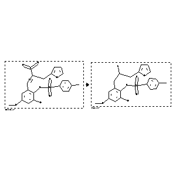

 |
| FA | RX(1); FLST(1); RX(1) |
Reaction (1 of 1)
| Reaction ID | 2624242 |
| Reactant BRN | 4603382 |
| Reactant | toluene-4-sulfonic acid 2-bromo-6-(3-furan-2-yl-2-nitro-propenyl)-4-methoxy-phenyl ester |
| Product BRN | 4588941 |
| Product | toluene-4-sulfonic acid 2-(2-amino-3-furan-2-yl-propyl)-6-bromo-4-methoxy-phenyl ester |
| No. of Reaction Details | 1 |
Reaction Details (1 of 1)
| Reaction Classification | Preparation |
| Reagent | aluminum hydride |
| Solvent | tetrahydrofuran |
| Comment | Yield given |
| Citation Pointer | 5547761; Journal; Darlington, W. H.; Szmuszkovicz, J.; TELEAY; Tetrahedron Lett.; EN; 29; 16; 1988; 1883-1886; |
Reference (1 of 1)
| Citation Number | 5547761 |
| Document Type | Journal |
| Authors | Darlington, W. H.; Szmuszkovicz, J. |
| CODEN | TELEAY |
| Journal Title | Tetrahedron Lett. |
| Language Code | EN |
| (Series) Volume | 29 |
| Number | 16 |
| Publication Year | 1988 |
| Page | 1883-1886 |